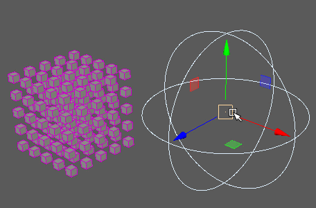

强度

控制附加节点的强度。
位置
位置强度(Position Strength)
确定附加节点对点平移的影响系数。
位置延迟(Position Delay)
根据点 ID 延迟已设置动画的
“位置强度”(Position Strength)
。请注意，这仅在“位置强度”(Position Strength)已设置关键帧时才有效。
随机化位置延迟(Randomize Position Delay)
确定如何针对
“位置延迟”(Position Delay)
为点 ID 进行排序。启用此选项将通过随机点 ID 延迟点，而禁用此选项将按数字顺序为这些点设置动画。
反转位置延迟(Reverse Position Delay)
反转为点设置动画的顺序。
强度贴图(Strength Map)
确定输入文件（2D 纹理、动画纹理等）来控制该节点的效果的形状。
贴图投影轴(Map Projection Axis)
确定投影
“强度贴图”(Strength Map)
时所沿的轴。
贴图辅助对象(Map Helper)
显示用于在场景中交互放置
“强度贴图”(Strength Map)
的对象。可以在该字段上单击鼠标右键来创建新的辅助对象（平面）（如果不存在）。还可以使用鼠标中键将网格拖入此字段，或者单击鼠标右键连接选定网格。如果网格已连接，还可以单击鼠标右键来断开其连接或者将其显示在大纲视图中。
注：
为获得最佳结果，请将相同的纹理指定给
“强度贴图”(Strength Map)
和
“贴图辅助对象”(Map Helper)
（在创建新的辅助对象时将自动执行此操作）。
旋转
旋转强度(Rotation Strength)
确定附加节点对点旋转的影响系数。
旋转延迟(Rotation Delay)
根据点 ID 延迟已设置动画的
“旋转强度”(Rotation Strength)
。请注意，这仅在“旋转强度”(Rotation Strength)已设置关键帧时才有效。
随机化旋转延迟(Randomize Rotation Delay)
确定如何针对
“旋转延迟”(Rotation Delay)
为点 ID 进行排序。启用此选项将通过随机点 ID 延迟点，而禁用此选项将按数字顺序为这些点设置动画。
反转旋转延迟(Reverse Rotation Delay)
反转为点设置动画的顺序。
强度贴图(Strength Map)
确定输入文件（2D 纹理、动画纹理等）来控制该节点的效果的形状。
贴图投影轴(Map Projection Axis)
确定投影
“强度贴图”(Strength Map)
时所沿的轴。
贴图辅助对象(Map Helper)
显示用于在场景中交互放置
“强度贴图”(Strength Map)
的对象。可以在该字段上单击鼠标右键来创建新的辅助对象（平面）（如果不存在）。还可以使用鼠标中键将网格拖入此字段，或者单击鼠标右键连接选定网格。如果网格已连接，还可以单击鼠标右键来断开其连接或者将其显示在大纲视图中。
注：
为获得最佳结果，请将相同的纹理指定给
“强度贴图”(Strength Map)
和
“贴图辅助对象”(Map Helper)
（在创建新的辅助对象时将自动执行此操作）。
缩放
缩放强度(Scale Strength)
确定附加节点对点缩放的影响系数。
缩放延迟(Scale Delay)
根据点 ID 延迟已设置动画的
“缩放强度”(Scale Strength)
。请注意，这仅在“缩放强度”(Scale Strength)已设置关键帧时才有效。
随机化缩放延迟(Randomize Scale Delay)
确定如何针对
“缩放延迟”(Scale Delay)
为点 ID 进行排序。启用此选项将通过随机点 ID 延迟点，而禁用此选项将按数字顺序为这些点设置动画。
反转缩放延迟(Reverse Scale Delay)
反转为点设置动画的顺序。
强度贴图(Strength Map)
确定输入文件（2D 纹理、动画纹理等）来控制该节点的效果的形状。
贴图投影轴(Map Projection Axis)
确定投影
“强度贴图”(Strength Map)
时所沿的轴。
贴图辅助对象(Map Helper)
显示用于在场景中交互放置
“强度贴图”(Strength Map)
的对象。可以在该字段上单击鼠标右键来创建新的辅助对象（平面）（如果不存在）。还可以使用鼠标中键将网格拖入此字段，或者单击鼠标右键连接选定网格。如果网格已连接，还可以单击鼠标右键来断开其连接或者将其显示在大纲视图中。
注：
为获得最佳结果，请将相同的纹理指定给
“强度贴图”(Strength Map)
和
“贴图辅助对象”(Map Helper)
（在创建新的辅助对象时将自动执行此操作）。
随机种子(Random Seed)
调整任何
“随机延迟”(Randomize Delay)
属性的随机化。
时间(Time)
显示当前帧。
父主题：
MASH 节点概述